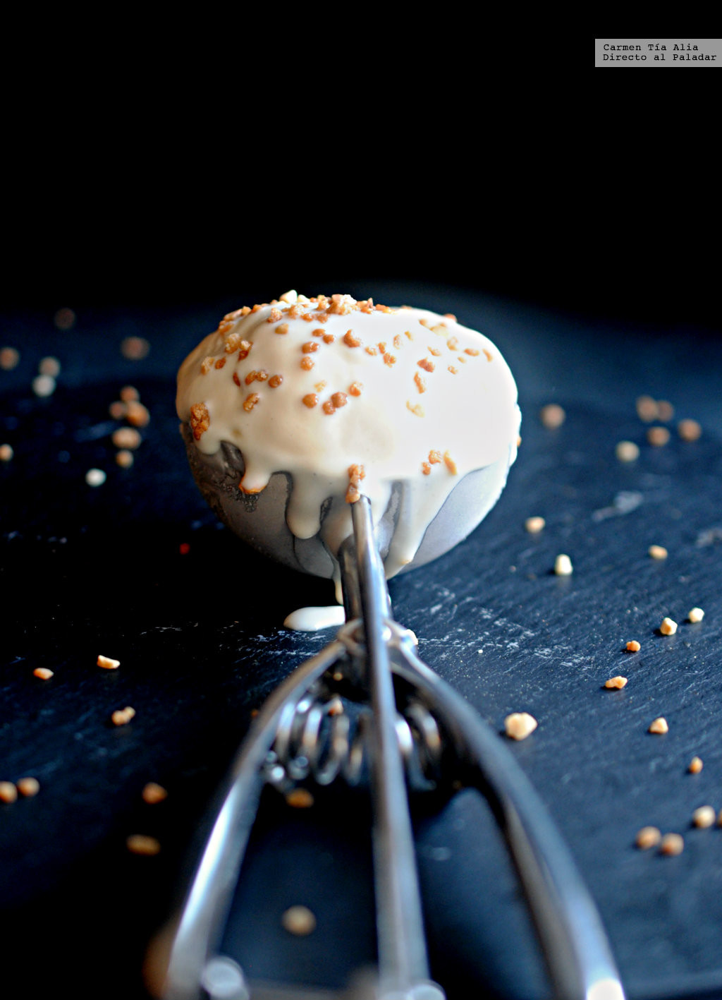
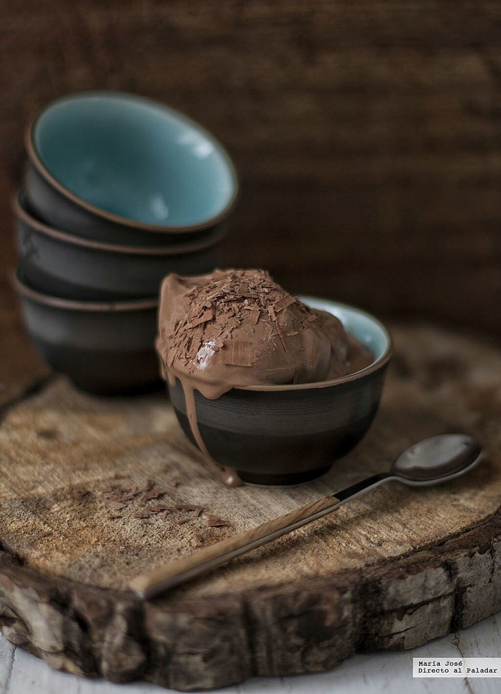
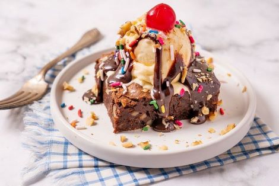

Bienvenido a nuestras deliciosas recetas de helados
En esta página encontrarás una selección de recetas de helados caseros para refrescarte en los días calurosos.
¡Prepara tu helado favorito y disfruta de su sabor cremoso y refrescante!
Volver a InicioTabla de Recetas
| Producto | Ingredientes | Proceso | Receta Original |
|---|---|---|---|
| Helado de Vainilla |
|
|
 |
| Helado de Fresa |
|
|

|
| Helado de Chocolate |
|
|
 |
| Helado de Brownie |
|
|  |
About Us
Somos un equipo apasionado por la creación de helados deliciosos y únicos. Nuestras recetas son cuidadosamente seleccionadas para ofrecerte una experiencia de sabor inigualable.
Nuestra dirección:Calle Principal 123, Ciudad Helada
País de los Helados
Volver a Inicio"El helado es felicidad congelada".
— Anónimo
Recetas de Helados
| Helado | Ingredientes | Proceso | Receta Original |
|---|